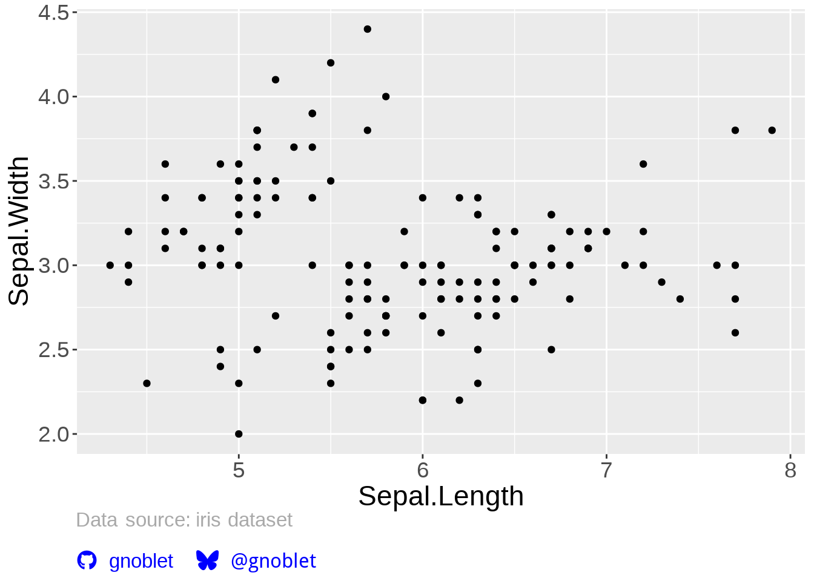

Add personal branding to ggplot2 charts using Font Awesome 7 icons
Key Features:
- 🚀 Auto Font Setup - Automatically downloads Font Awesome 7 fonts on first use
- 🎨 500+ Icons - Access to all Font Awesome brand and communication icons
- 🎯 One Function Call - Add complete branding with
add_branding() - 🎨 Customizable - Brand colors, custom text, and styling options
- 📦 Lightweight - Efficient font caching and quite minimal dependencies
Installation
Install the development version from GitHub:
# library(pak)
pak::pak("gnoblet/ggbranding")
# CRAN version to comeQuick Start
library(ggplot2)
library(ggtext)
library(ggbranding)
library(showtext)
#> Loading required package: sysfonts
#> Loading required package: showtextdb
library(sysfonts)
# setup dpi
showtext::showtext_opts(dpi = 240)
# add branding with + in ggplot chain
ggplot(mtcars, aes(x = mpg, y = wt)) +
geom_point() +
labs(title = "My Awesome Plot") +
add_branding(
github = "gnoblet",
bluesky = "@gnoblet",
linkedin = "gnoblet"
)
That’s it! The function automatically:
- Downloads and sets up Font Awesome 7 fonts
- Applies
ggtext::element_textbox_simple()theme - Creates HTML-formatted captions with icons
- Handles text sanitization for grid rendering
Uses Examples
Use with + in your ggplot chain:
# With additional text before branding, custom spacing and blue colors
ggplot(iris, aes(x = Sepal.Length, y = Sepal.Width)) +
geom_point() +
add_branding(
github = "gnoblet",
bluesky = "@gnoblet",
additional_text = "Data source: iris dataset",
text_position = "before",
line_spacing = 2L, # double line breaks for extra space
icon_color = "blue",
text_color = "blue",
additional_text_color = "darkgrey"
)
# With custom styling and Roboto Condensed font
font_add_google("Monoton", "monoton")
ggplot(mtcars, aes(x = mpg, y = wt)) +
geom_point() +
add_branding(
github = "GNOBLET",
bluesky = "@GNOBLET",
caption_halign = 1, # right-align caption
icon_size = "12pt", # larger icons
text_size = "12pt", # larger text,
text_family = "monoton", # custom font
caption_margin = ggplot2::margin(t = 20, b = 5, unit = "pt") # custom margin
)
# Use custom icons
ggplot(mtcars, aes(x = mpg, y = wt)) +
geom_point() +
add_branding(
github = "gnoblet",
bluesky = "@gnoblet",
custom_icons = c(
envelope = "gnoblet@fake.news",
rss = "https://gnoblet.github.io"
)
)
#> No icon found for platform 'rss', using generic link icon with following
#> unicode: 'xf0c1'.
Supported Platforms
Built-in support for major platforms:
| Platform | Parameter | Example |
|---|---|---|
| GitHub | github |
github = "username" |
| GitLab | gitlab |
gitlab = "username" |
linkedin |
linkedin = "profile" |
|
| Bluesky | bluesky |
bluesky = "user.bsky.social" |
| Twitter/X | twitter |
twitter = "handle" |
| Mastodon | mastodon |
mastodon = "@user@server.com" |
| ORCID | orcid |
orcid = "0000-0000-0000-0000" |
email |
email = "user@email.com" |
|
| Website | website |
website = "yoursite.com" |
Custom Icons
Access 500+ Font Awesome icons with custom_icons. To list and search available icons:
# Discover available icons
list_available_icons() |> head(5)
# Search for specific icons
list_available_icons(search = "envelope")Troubleshooting
Common Issues
# 1. Icons not displaying
fa_setup(auto_download = TRUE)
# 2. Clear cache if fonts seem corrupted
clear_font_cache_dir(confirm = FALSE)
# 3. Check available icons
head(list_available_icons())
# 4. Test basic functionality
branding(github = "test")Manual Font Setup (If Needed)
library(sysfonts)
library(showtext)
# Download Font Awesome 7 from https://fontawesome.com/download
# Extract and use the Brands font file
sysfonts::font_add(
family = "Font Awesome 7 Brands",
regular = "path/to/Font-Awesome-7-Brands-Regular-400.otf"
)
sysfonts::font_add(
family = "Font Awesome 7 Free",
regular = "path/to/Font-Awesome-7-Free-Solid-900.otf"
)
showtext::showtext_auto()
# Then use with setup_fonts = FALSE
branding(github = "username", setup_fonts = FALSE)License
GPL v3 or later. See the LICENSE file for details.
Citation
citation("ggbranding")Acknowledgments
- Inspired by Nicola Rennie’s blog post
- Font Awesome team for their marvelous icoms
- R community for ggplot2, ggtext, and ecosystem packages
Made with ♥ and Font Awesome 7 • Add your branding today!